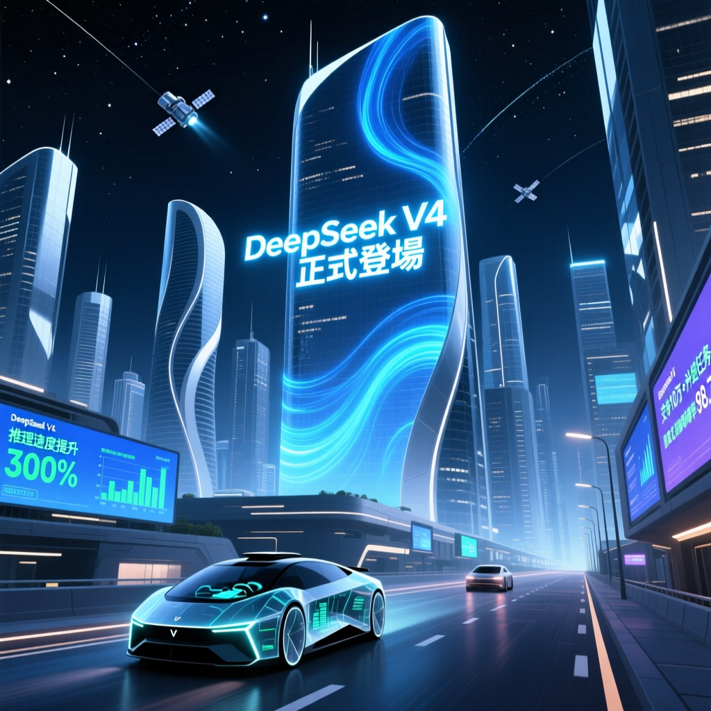

最新消息指 DeepSeek V4 可能即將發布，成本據稱僅 GPT 的百分之一。但截至 4 月初，官方尚未正式公告。

標題聲稱：「DeepSeek V4 正式登場」
實際情況：截至 2026 年 4 月 6 日，多個消息來源顯示 DeepSeek V4 尚未公開發布。
截至 2026 年 4 月 3 日，DeepSeek V4 預計在「未來數週內」發布，並將使用華為最新晶片。
— 引用 Reuters / The Information 報導（ via codersera.com）據報導 DeepSeek V4 成本僅 GPT 的百分之一，定價約 $0.30/百萬 Tokens，大幅降低企業 AI 使用門檻。
消息指 DeepSeek V4 採用 1 兆參數的 Mixture-of-Experts 架構，具備 100 萬上下文窗口。
預計將使用華為最新 AI 晶片運行，這是 DeepSeek 與華為合作的重要信號。
軟體工程基準測試 SWE-bench 達到 81%，表現接近 Claude 和 GPT-5 等頂級模型。
| 模型 | 發布狀態 | 成本/MTok | SWE-bench | 特色 |
|---|---|---|---|---|
| DeepSeek V4（傳聞） | ⚠️ 預計 4/2026 | $0.30 | 81% | 華為晶片、Engram 記憶 |
| GPT-5 | ✅ 已發布 | $15 | ~85% | OpenAI 最新旗艦 |
| Claude 4 | ✅ 已發布 | $18 | ~83% | Anthropic 主打 |
| Gemini 2.5 | ✅ 已發布 | $7.5 | ~78% | Google 旗艦 |
DeepSeek V4 之所以備受關注，不僅是因為其據稱的低成本，更代表中國 AI 發展的重要里程碑。如果發布属实，將對企業 AI 市場格局產生深遠影響。
無論 DeepSeek V4 何時正式發布，其「低成本、高效能」的形象已成功抢占市場注意力。企業級 AI 市場即將迎來新一輪價格戰。
DeepSeek V4 的意義不僅在於技術，更在於「破壞性定價」——若傳聞屬實，將重新定義企業 AI 成本基準。